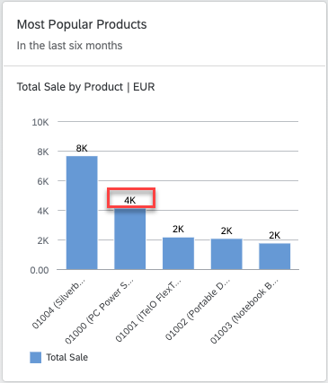

Configuring Charts
You can use the same annotation file with different qualifiers to present charts with different chart views. You do this by specifying different qualifiers in the annotation file for each card. The following sections of the annotation file apply to all chart types:
| Annotation |
What it Does |
|---|---|
UI.Identification |
Specify the navigation targets activated when the user clicks the card and list the parameters to pass to the target application. This definition is mandatory. For more information, see Configuring Card Navigation. |
UI.SelectionVariant.SelectOptions |
Specify the filter values that are applied to the card, which are applied when retrieving the card data. |
UI.PresentationVariant.SortOrder |
Specify the sort order to be used. |
UI.PresentationVariant.MaxItems |
Limit the maximum number of records to be fetched from the
backend. If this variant isn't used, then all records from the
backend will be displayed in the chart.
Don't use this for charts that rely on complete data sets, for example, the donut chart card, otherwise the results won't be meaningful. |
UI.Chart |
Specify the dimensions and measures that make up the chart, the chart type, and the way that the measures/dimensions are used for the chart. This definition is mandatory. |
UI.Chart.MeasureAttributes.Measure |
Defines the measures used in the chart. |
UI.Chart.MeasureAttributes.Role |
The manner in which a measure is used within the chart. This is configured differently for each chart type, as described below. |
UI.Chart.DimensionAttributes.Dimension |
These are the dimensions used in the chart. |
UI.Chart.DimensionAttributes.Role |
The manner in which a dimension is used within the chart. This is configured differently for each chart type, as described below. |
Formatting Numeric Values in Charts
Within overview pages, analytical chart cards can have format measure values based on
the NumberOfFractionalDigits property of the
DataPoint term in the annotation file.
Here is an example annotation that shows how it's used:
XML Annotation
<Annotation Term="UI.DataPoint" Qualifier=" Eval_by_Currency_TotalSales ">
<Record Type="UI.DataPointType">
<PropertyValue Property="Value" Path="Sales"/>
<PropertyValue Property="ValueFormat">
<Record>
<PropertyValue Property="ScaleFactor" Decimal="1000" />
<PropertyValue Property="NumberOfFractionalDigits" Int="3" />
</Record>
</PropertyValue>
</Record>
</Annotation>
<Annotation Term="UI.Chart" Qualifier="Eval_by_Currency">
<Record Type="UI.ChartDefinitionType">
<PropertyValue Property="Title" String="View1" />
<PropertyValue Property="ChartType" EnumMember="UI.ChartType/Bubble"/>
<PropertyValue Property="MeasureAttributes">
<Collection>
…
<Record Type="UI.ChartMeasureAttributeType">
<PropertyValue Property="Measure" PropertyPath="TotalSales" />
<PropertyValue Property="Role" EnumMember="UI.ChartMeasureRoleType/Axis2" />
<PropertyValue Property="DataPoint" AnnotationPath="@UI.DataPoint#Eval_by_Currency-TotalSales"/>
</Record>
…
</Collection>
</PropertyValue>
…
</Record>
</Annotation>ABAP CDS Annotation
@UI.dataPoint: {
valueFormat: {
scaleFactor: 1000,
numberOfFractionalDigits: 3
}
}
property_name;
@UI.Chart: [
{
title: 'View1',
chartType: #BUBBLE,
measureAttributes: [
{
measure: 'TotalSales',
role: #AXIS_2,
asDataPoint: true
}
],
qualifier: 'Eval_by_Currency'
}
]
annotate view VIEWNAME with { }
CAP CDS Annotation
UI.DataPoint # Eval_by_Currency-TotalSales : {
$Type : 'UI.DataPointType',
ValueFormat : {
ScaleFactor : 1000,
NumberOfFractionalDigits : 3
}
},
UI.Chart #Eval_by_Currency : {
$Type : 'UI.ChartDefinitionType',
Title : 'View1',
ChartType : #Bubble,
MeasureAttributes : [
{
$Type : 'UI.ChartMeasureAttributeType',
Measure : TotalSales,
Role : #Axis2,
DataPoint : '@UI.DataPoint#Eval_by_Currency-TotalSales'
}
]
}
Semantic Pattern
With the semantic pattern feature, overview page analytical cards can enable users to compare between actual and forecast values. The line, column, and vertical bullet chart cards support this feature. The forecast value comes from the datapoint annotation that is associated with the measure used in the selected analytical card. To enable the semantic pattern feature:
- Datapoint annotation should contain the
ForecastValueproperty with value as a measure. - Chart annotation should consist of:
- 1 dimension and 1 measure for line and column chart cards
- 1 dimension and 1-2 measures for vertical bullet chart cards

Here's an example annotation that shows how it's used:
XML Annotation
<Annotation Term="UI.DataPoint" Qualifier="Column_Forecast">
<Record Type="UI.DataPointType">
<PropertyValue Property="Title" String="Sales Performance"/>
<PropertyValue Property="Value" Path="Sales"/>
<PropertyValue Property="ValueFormat">
<Record>
<PropertyValue Property="ScaleFactor" Decimal="0"/>
<PropertyValue Property="NumberOfFractionalDigits" Int="3"/>
</Record>
</PropertyValue>
<PropertyValue Property="ForecastValue" Path="SalesShare"/>
</Record>
</Annotation>
<Annotation Term="UI.Chart" Qualifier="Eval_by_Currency_Column">
<Record Type="UI.ChartDefinitionType">
<PropertyValue Property="Title" String="Column chart for shape" />
<PropertyValue Property="ChartType" EnumMember="UI.ChartType/Column" />
<PropertyValue Property="MeasureAttributes">
<Collection>
<Record Type="UI.ChartMeasureAttributeType">
<PropertyValue Property="Measure" PropertyPath="Sales" />
<PropertyValue Property="DataPoint">
<AnnotationPath>@UI.DataPoint#Column_Forecast</AnnotationPath>
</PropertyValue>
<PropertyValue Property="Role" EnumMember="UI.ChartMeasureRoleType/Axis1" />
</Record>
</Collection>
</PropertyValue>
<PropertyValue Property="DimensionAttributes">
<Collection>
<Record Type="UI.ChartDimensionAttributeType">
<PropertyValue Property="Dimension" PropertyPath="SupplierCompany" />
<PropertyValue Property="Role" EnumMember="UI.ChartDimensionRoleType/Category" />
</Record>
</Collection>
</PropertyValue>
</Record>
</Annotation>ABAP CDS Annotation
@UI.dataPoint: {
title: 'Sales Performance',
forecastValue: 'SalesShare',
valueFormat: { scaleFactor: 0, numberOfFractionalDigits: 3 }
}
Sales;
@UI.Chart: [
{
title: 'Column chart for shape',
chartType: #COLUMN,
measureAttributes: [
{
measure: 'Sales',
role: #AXIS_1,
asDataPoint: true
}
],
dimensionAttributes: [
{
dimension: 'SupplierCompany',
role: #CATEGORY
}
],
qualifier: 'Eval_by_Currency_Column'
}
]
annotate view VIEWNAME with { }
CAP CDS Annotation
UI.DataPoint #Column_Forecast : {
$Type : 'UI.DataPointType',
Title : 'Sales Performance',
Value : Sales,
NumberFormat : {
ScaleFactor : 0,
NumberOfFractionalDigits : 3
},
ForecastValue : SalesShare
},
UI.Chart #Eval_by_Currency_Column : {
$Type : 'UI.ChartDefinitionType',
Title : 'Column chart for shape',
ChartType : #Column,
MeasureAttributes : [
{
$Type : 'UI.ChartMeasureAttributeType',
Measure : Sales,
DataPoint : '@UI.DataPoint#Column_Forecast',
Role : #Axis1
}
],
DimensionAttributes : [
{
$Type : 'UI.ChartDimensionAttributeType',
Dimension : SupplierCompany,
Role : #Category
}
]
},
Chart Types
Overview pages can use line, donut, bubble, column, stacked column, vertical bullet, combination, and scatter analytic chart cards.
The value assigned to the role property for dimensions and measures in the annotation file determines the visualization of the chart. For dimensions, you can set the role to category or series. If no value is specified, the default is category.
For measures, you can set the role to the values: axis1, axis2 , or axis3. If no value is specified, the default is axis1. The actual interpretation of the role value specified in the annotation file varies according to the chart type used.
Time Series Charts
Time series chart cards are cards with regular charts, but use time as the category axis instead of the categorical axis. The advantage in using a time-series axis is that the representation of the time-based dimension is much cleaner and more responsive to the change in card size. The display level and format in the time axis would be offered in the default format by the visual chart (for example day/month/year displayed as 10/Jan/2016).
Analytic cards will automatically use the time axis only if the following conditions are met:
- The chart type is either line, bubble, column, or combination
- The chart is configured with only one dimension
- The data type of the dimension is either
edm.datetimeoredm.string. If the data type isedm.string, then it must have the additional OData metadata annotationsap:semanticsofyearmonthday. If it's a bubble chart, there must be exactly two measures - If it's a combination chart card, then there must be at least two measures.
Only line, bubble, column, and combination chart cards support the time axis.
Color Palette
A few chart types (line, bubble, combination, and stacked column) support color
palette for semantic coloring. To enable this feature, configure the required chart
type and define the colorPalette property in the app descriptor.
The colorPalette property is a map of four objects. Each object
indicates the semantic representations:
-
First object: criticality state 0
-
Second object: criticality state 1
-
Third object: criticality state 2
-
Fourth object: criticality state 3
"colorPalette" : {
"0": {
"color": "sapUiChartPaletteSemanticNeutral",
"legendText" : "{{OTHERS}}"
},
"1": {
"color": "sapUiChartPaletteSemanticBadDark1",
"legendText" : "{{BAD}}"
},
"2": {
"color": "sapUiChartPaletteSemanticCriticalDark2",
"legendText" : "{{CRITICAL}}"
},
"3" : {
"color": "sapUiChartPaletteSemanticCritical",
"legendText" : "{{GOOD}}"
}
}Every object in the colorPalette map has two properties
color (a color value for a particular state) and
legendText (the corresponding legend text).
-
Use only the colors listed in the semantic palette that are defined by SAP Fiori guidelines for customizing the column stack card.
-
All four objects in the color
colorPalettemap are mandatory.
Stable Coloring with Dimension Values (Column Stack Chart)
You can configure an analytical card with column stack chart to map the dimension values to specific colors. You can use the configuration mentioned below:
-
In the card manifest setting, set
bEnableStableColorsto true. -
Define the color palette for the dimension. Follow the structure mentioned below:
"colorPalette": { "dimensionSettings": { "StatusCriticality": { "rule1": { "color": "<colorValue1>", "dimensionValue": "<dimensionValue1>" }, "rule2": { "color": "<colorValue2>", "dimensionValue": "<dimensionValue2>" } } } }
You must define the dimensionSettings configuration under
colorPalette. To color each dimension value, you must customize
the color and dimensionValue to be colored, as per the defined
rule, under the dimension property path configuration. (You can define any name for
the object property key. In the above mentioned example they are mentioned as rule1
and rule2)
Additionally, you can add an index card with the rules configuration. The legends get positioned in the order of the maintained index property. The index value is 0-index based. This configuration is placed under card settings. The card setting should look similar to the following:
"sap.ovp": {
...
"cards": {
...
"<card_id>": {
"model": "<model_name>",
"template": "sap.ovp.cards.charts.analytical",
"settings": {
"title": "<Card title>",
"entitySet": "<entitySet>",
"chartAnnotationPath": "com.sap.vocabularies.UI.v1.Chart#Eval_by_Currency_ColumnStacked",
"bEnableStableColors": true,
"colorPalette": {
"dimensionSettings": {
"StatusCriticality": {
"rule1": {
"color": "sapUiChartPaletteSemanticGood",
"dimensionValue": "0",
"index": 0
},
"rule2": {
"color": "sapUiChartPaletteSemanticNeutral",
"dimensionValue": "1",
"index": 1
},
"rule3": {
"color": "sapUiChartPaletteSemanticCriticalDark2",
"dimensionValue": "2",
"index": 2
},
"rule4": {
"color": "sapUiChartPaletteSemanticBad",
"dimensionValue": "3",
"index": 3
}
}
}
}
}
}
}
}
}
You can order the legends as per the dimension configuration.
If the dimensionValue and index is defined under
dimensionSettings and not the color, then only the legends get
ordered and default colors are rendered. To order just the legends, do not define
color property for any of the dimensionSettings value.
Data Label in Analytical Chart
You can make data labels visible in analytical cards.
To do this, set the showDataLabel property to True
in sap.ovp of the manifest file. The default value is
False.
"sap.ovp": {
"globalFilterModel": "salesOrder",
"globalFilterEntityType": "GlobalFilters",
"chartSettings": {
"showDataLabel":true
},
More Information
For more information about the type of charts used in overview pages, see Chart Cards Used in Overview Pages.